Unity voxel workflow
Turn Litematic schematics into live Unity worlds.
Import Minecraft resource packs, preview .litematic files in the Editor, edit blocks visually, persist changes, and synchronize compact command deltas with Netcode for GameObjects.
- Editor and runtime
- Resource pack stacks
- Chunked meshing
- Undo and redo
- Optional NGO sync
Before you begin
Requirements
Netcode is optional.
Install Netcode for GameObjects only when using the VoxelsAtWork.Netcode components. The core runtime does not depend on NGO.
Recommended workflow
Quick start
This path uses project defaults and drag-and-drop. It is the fastest way to get a Play Mode-ready world into a scene.
- Import a resource pack stackCompile Minecraft blockstates, models, and textures into Unity assets.
- Create a VoxelWorldConfigAssign the compiled resource pack and choose chunk, import, and meshing settings.
- Set project defaultsMake new loaders and Scene drops inherit the configuration.
- Enable thumbnails and import a .litematicGenerate visual previews in the Project window.
- Drag the Litematic Asset into the SceneCreate a configured loader and build its preview immediately.
Step 1
Import a resource pack stack
Open . A stack may combine a complete base pack with one or more override packs.
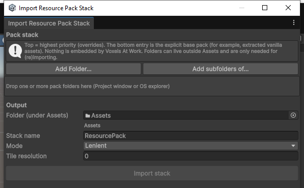
Stack order matters.
The top entry has the highest priority. The bottom entry must be the explicit base pack. Resolution happens independently for blockstates, models, and textures.
- Add pack root folders
Use folders that contain an
assets/directory. They may live outside the Unity project. - Order overrides above the base
A partial texture pack belongs above a complete vanilla-format base pack.
- Choose an output folder under Assets
The source folders are needed only when importing or reimporting.
- Name and import the stack
Use Lenient while iterating; use Strict when missing or invalid resources should fail the import.
The importer creates three persistent assets:
MyStack_ResourcePack.asset
MyStack_BlockMetadata.asset
MyStack_TextureArray.asset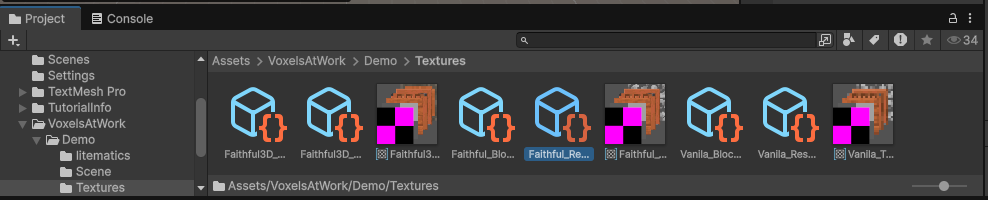
Do not redistribute Minecraft assets without permission.
Voxels At Work compiles assets supplied by the user. Confirm the license and redistribution rights for every resource pack you ship.
Step 2
Create and configure a VoxelWorldConfig
Create the asset from , then assign the compiled ResourcePackAsset.
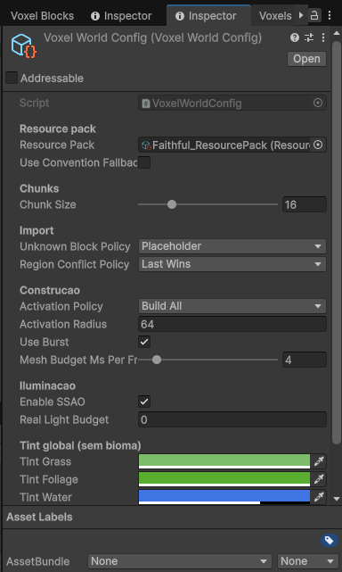
| Setting | Purpose | Recommended start |
|---|---|---|
| Resource Pack | Compiled blockstates, models, textures, and metadata. | Assign the imported stack. |
| Use Convention Fallback | Tries name-based block resolution when the resource pack cannot resolve a block. | Off; enable for prototyping only. |
| Chunk Size | Voxel dimensions of each generated chunk. | 16 |
| Unknown Block Policy | Skips, replaces, or reports unresolved block states. | Placeholder |
| Region Conflict Policy | Chooses which region wins when regions overlap. | Last Wins |
| Activation Policy | Builds every chunk or activates chunks around an anchor. | Build All for authoring. |
| Mesh Budget Ms Per Frame | Limits incremental runtime mesh work each frame. | 4 ms |
| Global Tints | Grass, foliage, and water colors without biome data. | Adjust to the project art direction. |
Step 3
Set project defaults
Open . Assign the Default Config so new loaders and Scene drops inherit it.
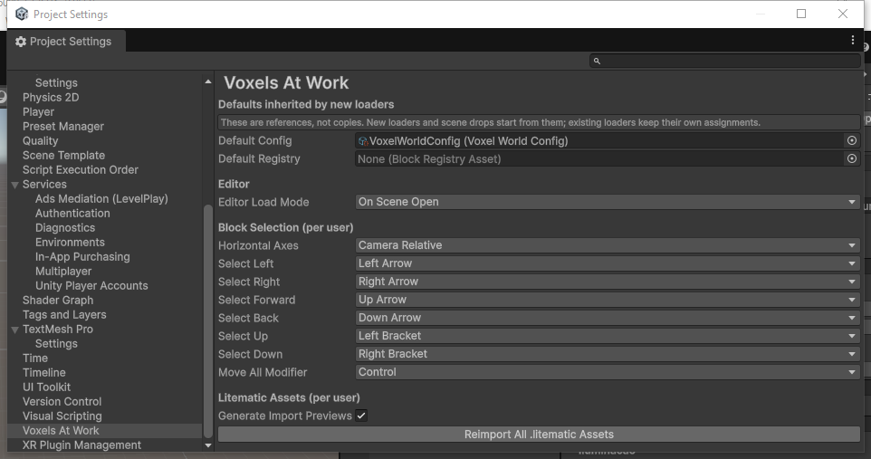
Defaults are references, not copies.
Changing a project default affects newly created loaders. Existing loaders keep their assigned references.
Editor Load Mode
Step 4
Enable previews and import a Litematic
Enable Generate Import Previews in Project Settings, then click Reimport All .litematic Assets. The toggle controls 128×128 Project-window thumbnails; it does not control the Scene preview.
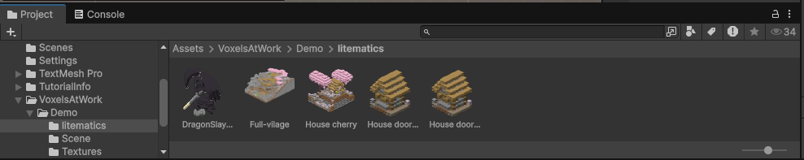
- Place a .litematic file under Assets
Unity imports it as a
LitematicAsset. - Inspect its metadata
The asset stores raw bytes plus name, author, description, size, region count, block count, and Minecraft data version.
- Use the asset as the source of truth
The mesh is derived output. The
LitematicAsset, configuration, and optional history are the reproducible source.
Step 5
Drag the Litematic Asset into the Scene
Drag a LitematicAsset from the Project window into the Scene view. Voxels At Work creates a LoadVoxelWorld, assigns project defaults, positions it at the drop point, and builds the editor preview.

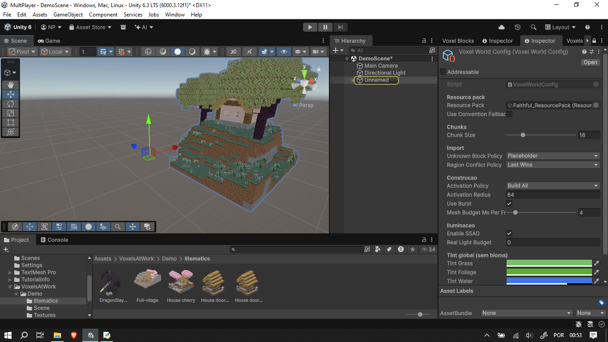
Play Mode-ready by default.
The loader rebuilds its runtime world in Awake(). Build Immediately (runtime) controls whether meshes are completed immediately after load; it does not disable base import or history replay.
See it working
Demo scene
Demo/Scene/DemoScene.unity is a minimal scene with a LoadVoxelWorld already configured against one of the sample .litematic files under Demo/litematics/ and the Basic resource pack under Demo/Textures/. Open the scene and enter Play Mode to see the schematic import and build into a live voxel world with no additional setup.
Reference, not a showcase.
The bundled Basic pack is a flat-color placeholder, not a visual demonstration. Use the demo scene to see a working LitematicAsset / VoxelWorldConfig / resource pack setup, then swap in your own resource pack stack for real block visuals.
Alternative workflow
Use World Builder for manual imports
Open when you want to choose every input explicitly instead of using project defaults.
LoadVoxelWorld after building the preview.VoxelWorld without a runtime loader. Bake it when static content is required.- Assign the schematic
Choose the imported
LitematicAsset. - Assign a World Config
Choose the resource pack, chunks, and import behavior.
- Optionally assign a Block Registry
Manual overrides are applied before resource pack resolution.
- Build the scene preview
The window displays the latest
ImportReport.
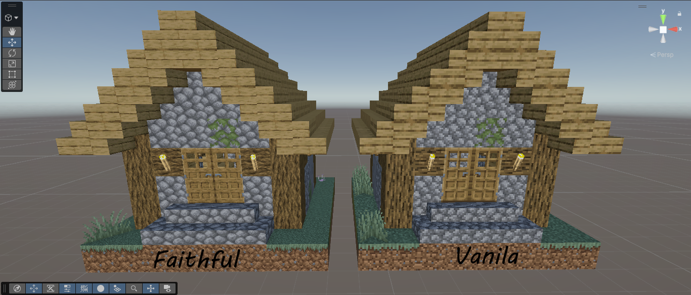
Editor workflow
Understand preview behavior
The editor preview is transient. It is safe to clear and rebuild because it is derived from the .litematic, its configuration, materialized scene entities, and optional authoring history.
| Control | What it changes |
|---|---|
| Editor Load Mode | When the editor preview builds automatically. |
| Build in editor / Rebuild in editor | Imports the base, replays history, and builds every preview mesh now. |
| Clear preview | Removes generated chunk children and the transient VoxelWorld. |
| Build Immediately (runtime) | Calls BuildAllNow() after runtime load. When disabled, normal frame-budgeted meshing can continue through Update(). |
| Generate Import Previews | Generates Project-window thumbnails during asset import. Reimport is required. |
Visual authoring
Edit a schematic in the Scene view
Open , then select a VoxelWorld or one of its chunk objects.
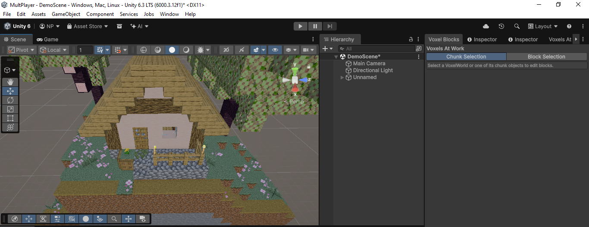
Chunk Selection
Select a generated chunk object to inspect or reposition a larger section. The selected chunk is outlined in the Scene view.
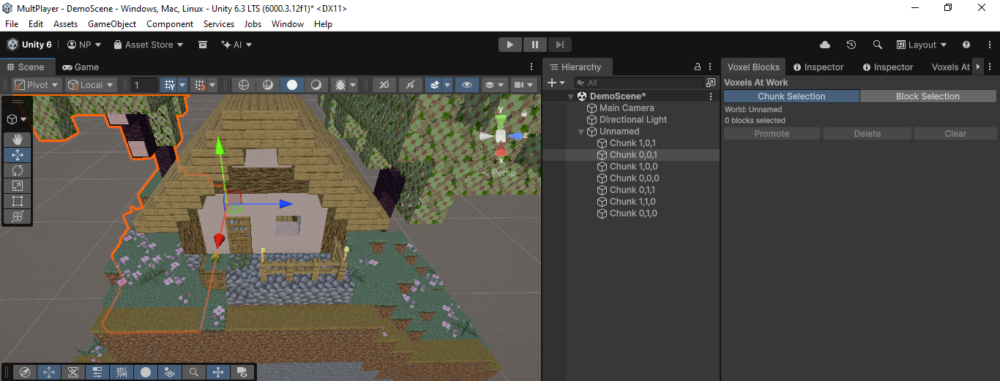
Block Selection
- Click a block in the Scene view to select it.
- Ctrl-click on Windows or Cmd-click on macOS to toggle blocks.
- Use the configured arrow and bracket keys to move the active highlight.
- Hold the configured Move All Modifier while navigating to move every selected highlight.
- Drag the transform handle and confirm the move, or press Delete to remove selected blocks.
- Use Promote to turn selected grid blocks into a movable GameObject.
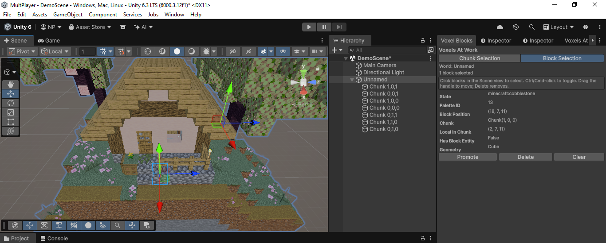

Promoted entities
Promotion removes the selected cells from the grid and creates a PromotedEntity GameObject with persistent source-cell information. Add components such as a Rigidbody, move it freely, and bake it back into the grid later.
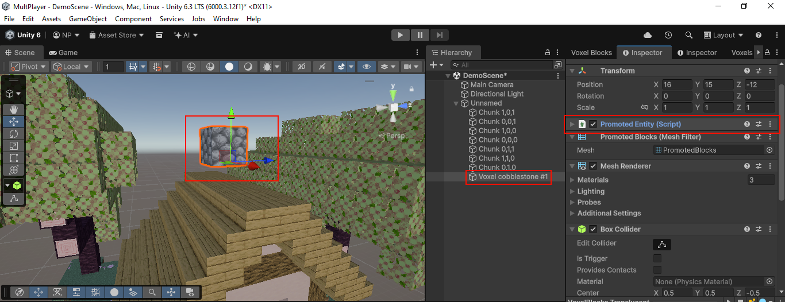
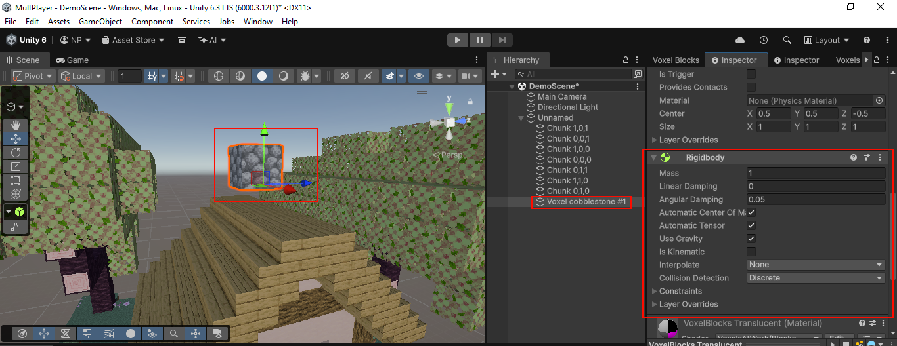

Reproducible edits
Save edits to an authoring history
Scene previews are generated data. Save visual edits to a VoxelEditHistory so they can be replayed after a preview rebuild and when the runtime world loads.
- Build the editor preview
The loader needs a live world before it can record edits.
- Edit blocks or promoted entities
Every committed operation is added to the world's command log.
- Select the LoadVoxelWorld object
The Inspector reports saved and unsaved edit counts.
- Click Save edits to history
On the first save, an asset named
<LitematicName>_EditHistory.assetis created beside the schematic.
Base version mismatch
If the source .litematic changes, the history is still replayed, but edits may target shifted cells. Review the result and save the history again only after confirming it.
Static output
Bake a world to a prefab
For non-editable environment art, select a generated VoxelWorld and use Bake to prefab (selected world) in World Builder. The bake persists meshes, colliders, materials, and the texture array beside the prefab.
Choose one source of truth.
Use a baked prefab for static content. Use LoadVoxelWorld when runtime editing, persistence, or multiplayer command sync is required.
Runtime bootstrap
LoadVoxelWorld component
LoadVoxelWorld is the recommended scene bootstrap. In Awake(), it initializes a world, restores an existing runtime snapshot when configured, or imports the Litematic base and replays authoring history.
| Field | Behavior |
|---|---|
| Schematic (.litematic) | Required base asset. |
| World Config | Resource pack, import, chunk, activation, and meshing settings. |
| Block Registry | Optional manual block overrides. |
| Build Immediately (runtime) | Completes all mesh work during load when enabled. |
| Edit History | Optional authoring delta log replayed over the base. |
| Save Key | Enables automatic runtime snapshot restore when non-empty. |
| Editor Load Mode | Overrides the project-wide preview mode for this loader. |
Code workflows
Use the core API
All public block coordinates use Minecraft orientation: X east, Y up, and Z south. Unity conversion negates Z.
Create and import a world
using UnityEngine;
using VoxelsAtWork;
public sealed class RuntimeVoxelBootstrap : MonoBehaviour
{
[SerializeField] LitematicAsset schematic;
[SerializeField] VoxelWorldConfig config;
[SerializeField] BlockRegistryAsset registryAsset;
VoxelWorld world;
void Start()
{
BlockRegistry registry = registryAsset != null
? registryAsset.ToRegistry()
: BlockRegistry.CreateForConfig(config);
world = VoxelWorld.Create(registry, config, "Runtime Voxel World");
ImportReport report = world.ImportLitematic(schematic.Bytes);
world.BuildAllNow();
Debug.Log(report);
}
}Remap blocks during import
world.ImportLitematic(schematic.Bytes, state =>
{
if (state.Id == "minecraft:tnt")
return BlockState.Air;
if (state.Id == "minecraft:gold_block")
return BlockState.Parse("minecraft:oak_planks");
return state;
});Read, edit, undo, and redo
var pos = new BlockPos(0, 64, 0);
BlockState before = world.GetBlock(pos);
world.SetBlock(pos, BlockState.Parse("minecraft:stone"));
world.MoveBlock(pos, pos.East);
if (world.CanUndo) world.Undo();
if (world.CanRedo) world.Redo();Commit an atomic batch
using (var edit = world.BeginEdit())
{
edit.Fill(
new BlockPos(0, 64, 0),
new BlockPos(4, 67, 4),
BlockState.Parse("minecraft:glass"));
edit.Set(2, 68, 2, BlockState.Parse("minecraft:lantern"));
}
world.BuildAllNow();Listen for changes
world.OnBlockChanged += (pos, oldState, newState) =>
Debug.Log($"{pos}: {oldState} -> {newState}");
world.OnImportReport += report =>
Debug.Log(report);
world.OnBufferCommitted += (buffer, origin) =>
Debug.Log($"{buffer.Count} commands from {origin}");Promote and bake blocks
var entity = world.PromoteToEntity(
new BlockPos(10, 64, 10),
addRigidbody: true);
if (entity != null)
{
entity.transform.position += Vector3.up * 2f;
entity.BakeIntoGrid();
}Convert between voxel and Unity coordinates
Vector3 corner = world.WorldToUnity(new BlockPos(10, 64, 10));
Vector3 center = world.WorldToUnityCenter(new BlockPos(10, 64, 10));
BlockPos cell = world.UnityToWorld(transform.position);Runtime persistence
Save and load worlds
Use the loader's persistent save key
Set a non-empty Save Key on LoadVoxelWorld. On the next load, a snapshot with that key wins over base import and authoring history because it already contains the complete runtime state.
LoadVoxelWorld loader = GetComponent<LoadVoxelWorld>();
loader.SaveKey = "player-world";
loader.SaveToDisk();
loader.LoadFromDisk();
bool exists = LoadVoxelWorld.SaveExists("player-world");
loader.DeleteSave();Write to your own stream
using System.IO;
using (var file = File.Create(path))
WorldSave.SaveSnapshot(world, file);
using (var file = File.OpenRead(path))
WorldSave.Load(world, file);Optional integration
Multiplayer with Netcode for GameObjects
Voxels At Work synchronizes commands, not meshes or the complete base schematic.
Every peerLoad the same base
→
Local editCommandBuffer
→
ServerValidate and broadcast
→
PeersApply the delta
- Load identical local inputs
Every peer must use the same
.litematic, configuration, resource pack, registry, and authoring history. - Add a NetworkObject
Add
VoxelNetSyncto synchronize committed commands. - Add join-in-progress support when needed
VoxelNetJoinInProgresssends a compacted snapshot plus the residual command log to late clients. - Assign the world
Set the
Worldproperty after creating it, or let the components find aVoxelWorldin the scene.
using UnityEngine;
using VoxelsAtWork;
using VoxelsAtWork.Netcode;
public sealed class NetworkVoxelBootstrap : MonoBehaviour
{
[SerializeField] LoadVoxelWorld loader;
[SerializeField] VoxelNetSync sync;
[SerializeField] VoxelNetJoinInProgress joinInProgress;
void Start()
{
VoxelWorld world = loader.LoadNow();
sync.World = world;
if (joinInProgress != null)
joinInProgress.World = world;
}
}Server authority
Assign VoxelNetSync.ServerValidator to reject invalid client commands. A rejected edit receives corrective block states from the server.
Compatibility
Known issues and limitations
- Verified against Unity 6000.3.12f1. Other Unity 6000.3.x patch releases are expected to work but have not been tested yet.
- Rendering has only been tested with the Universal Render Pipeline (URP) 17.3. The Built-in Render Pipeline and HDRP have not been tested and are not supported.
- Only Windows Desktop has been tested so far. Mobile, console, and WebGL targets have not been verified.
Real-world checks
Troubleshooting
My imported world has missing or placeholder blocks.
Inspect the resource pack import report and the world's ImportReport. A complete base usually needs blockstates, models, and textures under assets/<namespace>/. Keep partial override packs above the complete base. Leave Unknown Block Policy on Placeholder while diagnosing.
The Litematic Asset has no thumbnail.
Enable Generate Import Previews under Project Settings › Voxels At Work, assign a usable default configuration and resource pack, then click Reimport All .litematic Assets. The toggle affects future imports and reimports only.
The world loads in Play Mode but meshes are not immediately visible.
Enable Build Immediately (runtime) on LoadVoxelWorld when the complete world must be visible during startup. When disabled, the world still imports and replays history; meshing proceeds through the configured per-frame budget.
The editor becomes slow when opening a scene.
Use Manual or When Selected as the global Editor Load Mode. On Scene Open rebuilds every loader and is intended only for scenes where that cost is acceptable.
Saved authoring edits appear in the wrong cells.
The history may have been authored against different Litematic bytes. Check the base-version mismatch warning. Rebuild and verify the schematic before saving a new history.
A runtime save ignores changes made to the base schematic.
When a Save Key points to an existing snapshot, the snapshot wins because it contains the complete world. Clear that runtime save to return to base import plus authoring-history replay.
Clients produce different worlds from the same commands.
Verify that every peer starts from identical base bytes, resource pack, registry, configuration, history, and command order. Block states are serialized by name, but different resolution inputs can still generate different visuals or collision.
Resource pack changes do not appear at runtime.
Reimport the stack so its compiled assets and texture array are regenerated. Runtime reads compiled Unity assets; it does not read source JSON or PNG files directly.
Curated reference
API at a glance
LoadVoxelWorld
LoadNow()SaveToDisk()LoadFromDisk()DeleteSave()ListSaves()VoxelWorld
Create()ImportLitematic()BuildAllNow()GetBlock()SetBlock()MoveBlock()BeginEdit()Undo()Redo()Entities
PromoteToEntity()PromoteBlocks()Promote<T>()BakeEntityIntoGrid()GetEntity()Persistence
WorldSave.SaveSnapshot()WorldSave.SaveDeltaLog()WorldSave.Load()VoxelEditHistory.ReplayInto()Coordinates
BlockPosWorldToUnity()WorldToUnityCenter()UnityToWorld()CoordinateSpaceNetcode
VoxelNetSync.WorldVoxelNetSync.ServerValidatorVoxelNetJoinInProgress.WorldSnapshotCompactionBytes